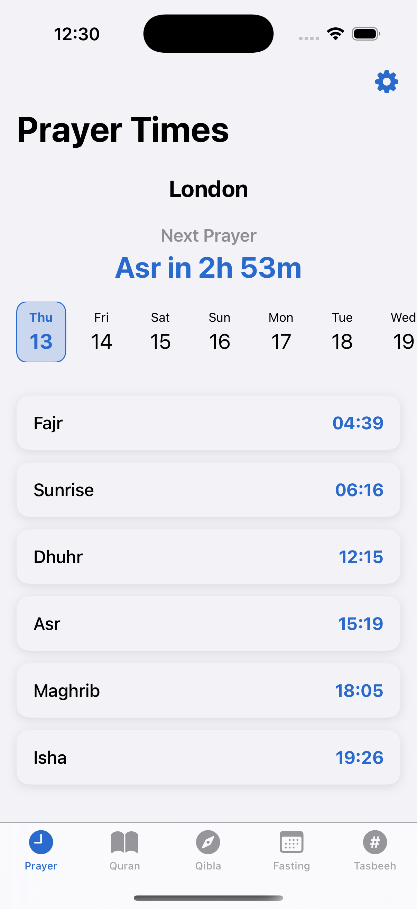
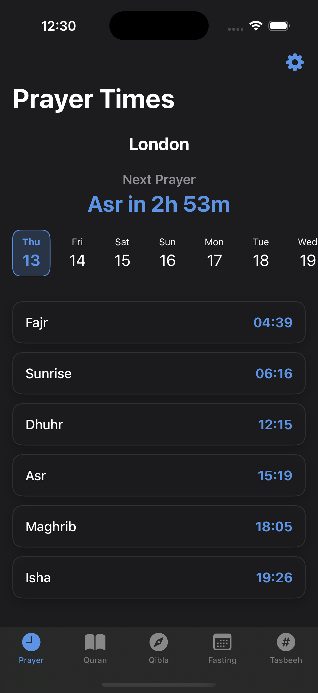
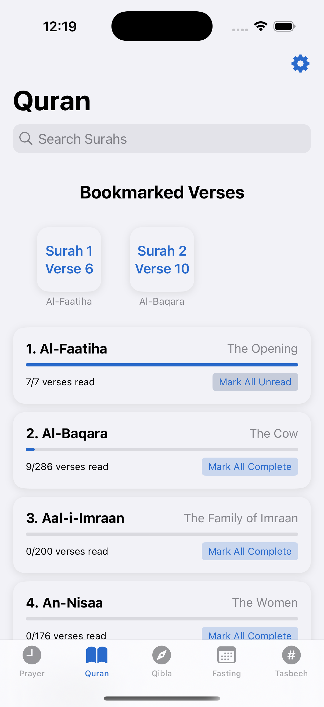
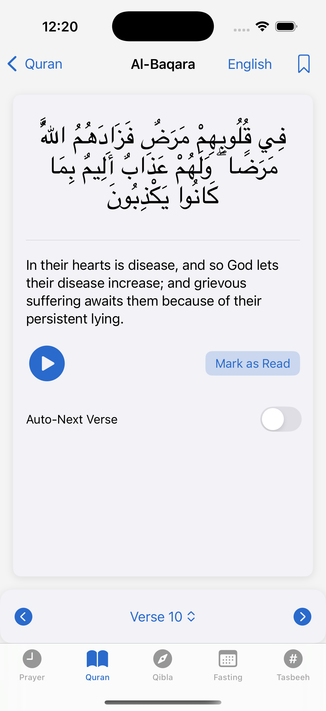
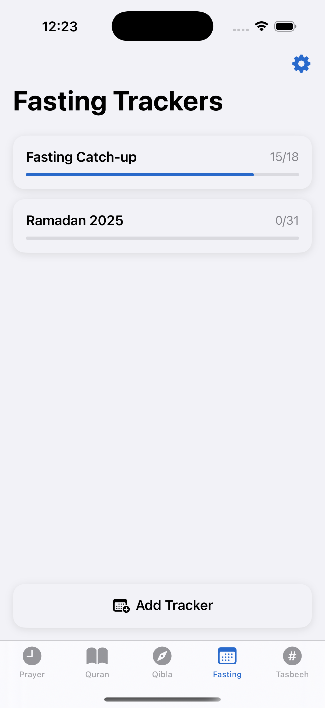
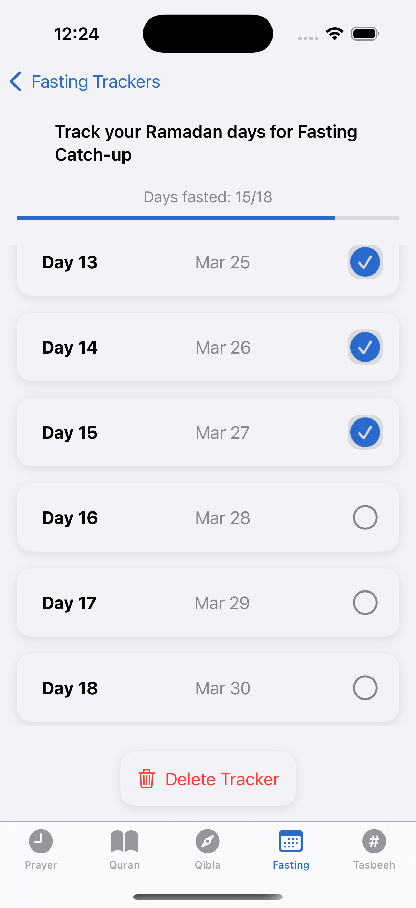
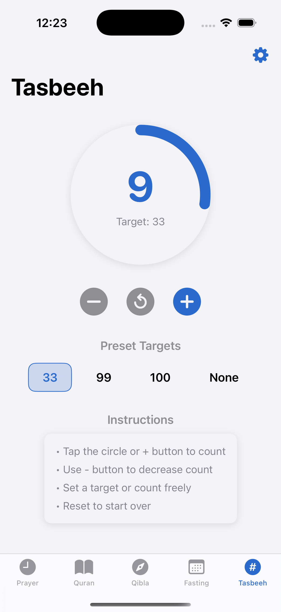
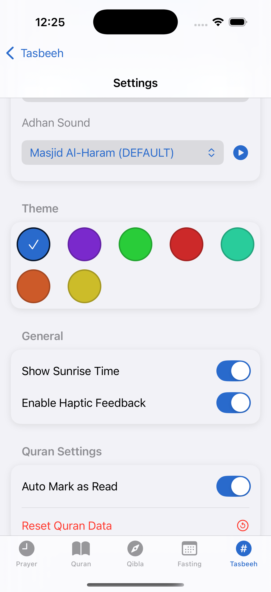

PrayWay - Prayer Times & Fasting Tracker
Lightweight companion app with extensive features, no pop-ups and no ads.
Over time, I repeatedly watched friends and family suffer with the bombardment of ads, pop-ups and subscriptions just for using one of the existing apps for a few seconds. It made one thing very clear: there needs to be an app that is user-friendly and not purely built for the purpose of making money.
Applications and Software used
| Xcode | Used for the development of the app. It's the IDE required for iOS development. It has a very useful device simulator allowing for easy testing! |
| LondonPrayerTimes API | For fetching of prayer times in alignment with the London Unified Prayer Times - an agreement by most London institutions to ensure simple and accurate prayer times. |
| pixabay | Royalty-free images used from 'Gordon Johnson' and 'Mohamed_hassan'. |
| Quran Cloud API | For Quran text and translations. |
| Arabicfonts (Al Qalam Quran) | For arabic font used in the Surah view. |
| Quran.com API | For audio recitations. |
The App
Using Apple's design language to ensure consistency, familiarity and simplicity, the app leverages a sleek and modern aesthetic including features like dark mode and haptics.
I wanted the app to be extremely simple to open up and close - no popups, no annoyances, no ads. Although the focus was on no ads and annoyances, I didn't want to sacrifice the aesthetic and functionality of the app, so I implemented a lot of advanced features for power users like widgets and time-sensitive notifications which can all be tuned to the user's liking.







